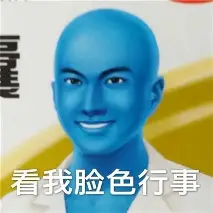

研究 AI 漫剧
正在试着用 AI 做漫画短剧：怎么把剧本拆成分镜、怎么让画面里的人保持一致、怎么把提示词写好。现在还在摸索阶段，但挺上瘾的。 做出来的短片和一些翻车记录，都放在 AI 视频试验田 里了。
广东阳春人，现居中山。喜欢跑步、弹吉他、打游戏、打桌球，也在研究 AI 漫剧怎么做。

一个精力还挺旺的人：白天写写代码、跑跑步，晚上要么抱着吉他，要么约人去打两杆桌球，剩下的时间就琢磨 AI 视频怎么做得更好看。
蓝天一
广东阳春
广东中山
19859385228
想了解更多，可以看百度百科的 阳春市词条 。
阳春在哪儿
阳春是广东阳江代管的县级市，在粤西、漠阳江的上游。名字取自"漠水之阳，四季如春"。地方不小，山水多，节奏慢，是我长大的地方。想细看的话， 这里有一份完整介绍 。
山和水
阳春在中国大陆最南端的喀斯特地貌核心区，山是青的、水是绿的。凌霄岩被叫作"南国第一洞府"，洞里的钟乳石又高又壮；春湾石林则被称作"南国第一石林"。夏天往洞里一钻，凉快得很。
春砂仁
阳春是"中国春砂仁之乡"。春砂仁是广东三宝之一，也是四大南药之首，能调理脾胃，国家地理标志产品。小时候家里煲汤、泡水都放它，离开家之后，一闻到那个味道就知道是阳春。
还有这些
阳春根雕、高流河墟这些老手艺和老集市，还有鸡笼顶的高山草甸、鹅凰嶂的森林。前两年《长安的荔枝》也来阳春取过景。
都是从喜欢开始，没一样是为了拿成绩。
跑步
跑起来大脑就放空了，跑完那一身汗，是我一天里最舒服的时候。心情不好的时候更要去跑，跑完很多事就没那么大了。
弹吉他
弹得不算专业，图个开心。一个人在家弹上半天，时间过得特别快。最喜欢的还是弹几首自己听了很多年的老歌。
打桌球
台球厅是我和朋友最常去的地方。不追求打得多好，就喜欢那种一杆一杆推过去、整个人安静下来的感觉。偶尔进一个漂亮的球，能高兴一晚上。
打游戏
喜欢和朋友一起玩，也爱琢磨游戏是怎么设计出来的——为什么这个关卡让人上瘾，为什么那个剧情让人记得住。
正在试着用 AI 做漫画短剧：怎么把剧本拆成分镜、怎么让画面里的人保持一致、怎么把提示词写好。现在还在摸索阶段，但挺上瘾的。 做出来的短片和一些翻车记录，都放在 AI 视频试验田 里了。
从零把这个个人主页搭出来，一边学一边改。做网页和做视频有个共同点——都是"想清楚了才好看，想不清楚怎么调都别扭"。